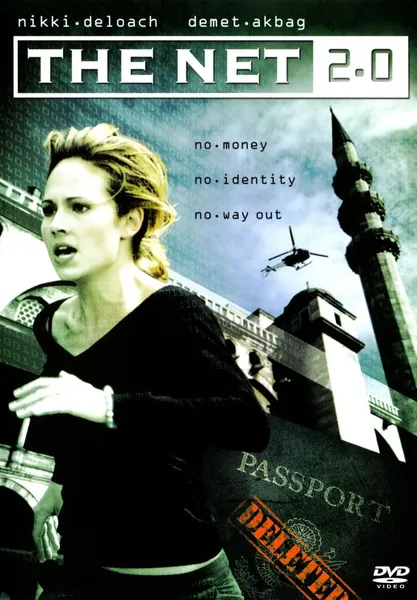

Фильм · 2006 · Драма, Триллер
Специалист по компьютерной безопасности прибывает в Стамбул на конференцию и за один день теряет всё: её паспорт переоформлен на другое имя, счета заблокированы, а никто не верит, что она — та, за кого себя выдает. Кража цифровой личности здесь — не просто фон, а сама суть сюжета: если все базы данных утверждают одно, а память героини — другое, кому поверят банк, полиция и консульство? Это своего рода продолжение классики 90-х, напоминающее о том, что сегодня документы существуют лишь в чужих базах данных.
A computer security specialist lands in Istanbul for a conference and loses everything within a day: her passport has been reissued to another name, accounts are blocked, and no one believes she is who she says. Digital identity theft here is not a backdrop but the plot itself: if every database says one thing and her memory another, who will the bank, the police and the consulate believe? A sequel to the 90s classic about the fact that documents now exist only in someone else's databases.